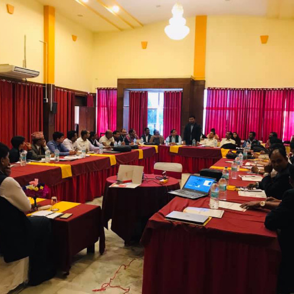

2023 |
Social Health Protection in Epidemics and Disasters : An experience of COVID-19 and necessity of integrated Social health protection system |
The Federal level Policy Dialogue on issues social health protection in epidemics and disasters: The experience of the COVID -19 pandemic and the need for integrated social health protection. The dialogue focused on the social health protection system of Nepal. The richness of the policy dialogue was profoundly influenced by the participation of esteemed individuals from various sectors. Notably, Former health minister, Members of the House of Representatives, Government officials, Experts and Students.
|

|
|
2019 |
“Procurement Reform in Health Sector” |
A Public Policy Dialogue on “Procurement Reform in Health Sector” was organized on 1 August, 20019 at Hotel Shangrila, Kathmandu. The dialogue was co- hosted by Public Policy Pathshala and The Asia Foundation to discuss on the Public Procurement Act and its implementation challenges in procurement of medicines and equipment’s. The dialogue was attended by health procurement experts, members of parliament, experts on local governance, donor representatives, civil society members, and other stakeholders. |
|
|
2019 |
Public Policy Dialogue on Newborn Health in Province 2 |
A public policy dialogue at provincial level was organized in Janakpur on 6 March, 2019 to share and discuss on the findings from series of discussion with the local governments at province 2 on newborn health. Principal Secretary of Province No. 2 government, Secretary for Social Development Ministry, Director from Province Health Directorate, representatives from local governments, representatives from development partners and health sector experts participated in the program. |
 | |
2018 |
Local Health Governance in Gandaki Province |
A multi-sector policy dialogue on issues of local health governance was organized in Pokhara on March 2018. Officials from over 40 local governments, Regional Director for Health (rechristened Provincial Health Directorate), district level health officials (rechristened Provincial health Office) and health sector experts actively participated in the province. The event focused on the challenges of federal transition in health sector. |

|
|
2018 |
“Pertinent Issues and Challenges of Public Health |
Following the endorsement of the Public Health Service Act, Public Policy Dialogue on “Pertinent Issues and Challenges of Public Health”- co-hosted by PPP and DFAT-TAF- was organized on September 21, 2018. |

|
|
2016 |
Public Finance |
A glimpse of the Pathshala debate Public Finance expert Jagdish Bhattarai was the presenter at the event, which was organized in the first week of May, focusing on the budget of the PPP debate. Gagan Thapa and economist Dr. Bishwo Poudel had a discussion. |

|
{kind=link}